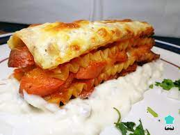

lasagna recet

sausage lasagna
Sausage pie with bell pepper ideal to innovate in the kitchen and delight your
family
ingredients
- 5 Tablespoons Butte
- 3 Tablespoons Wheat flour
- 1 Can Evaporated Milk CARNATION® CLAVEL®
- 2 Cups Water
- 1 NESTLÉ® Medium Cream Can
- 400 grams sausage slices
- 1 Unit Green pepper cut into cubes
- 1 1/2 teaspoons chicken bouillon powder
- 200 grams shredded Oaxaca cheese
- 200 Grams Pasta for lasagna sheets precooked
steps to follow
- Preheated oven at 180 °C.
- In a frying pan, heat 3 tablespoons of butter and fry the flour until it takes on a slightly golden color. Add CARNATION CLAVEL® Evaporated Milk, the water, the NESTLÉ® Media Crema and season with powdered chicken cosomé. Stir constantly until thickened to prevent lumps from forming.
- Apart, heat the remaining butter and lightly fry the sausages with the pepper, add the previous sauce and empty a little in a refractory. Arrange one layer of lasagna and one of the stew, continue until you finish with the cheese. Cover with aluminum foil and bake for 40 minutes, uncover and cook for another 10 minutes to brown.
- Serve hot, garnished with a little dill powder.